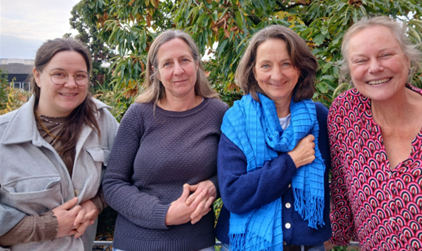

ATI – Ankommen, Teilhaben, Integrieren
ATI – Ankommen-Teilhaben-Integrieren ist ein Angebot im Rahmen des ESF-Programms EhAP Plus mit dem Ziel, die Lebenssituation von armutsgefährdeten und von sozialer Ausgrenzung bedrohten Personen zu verbessern. Insbesondere richtet es sich an besonders benachteiligte neuzugewanderte Unionsbürgerinnen und -bürger und deren Kinder unter 18 Jahren. Wir erreichen dieses Ziel durch Ansprache, Beratung und Begleitung.
Angebot
Niedrigschwellige Beratungs- und Begleitangebote, zukünftig auch mittels digitaler Ansprache auf Social Media
Unterstützung von Menschen, die von Armut, Ausgrenzung und Rassismus bedroht sind
Abmilderung individueller und komplexer Problemlagen zur Stärkung der Betroffenen
Förderung der sozialen und beruflichen Integration
Stärkung der Elternrolle und der Ressourcen von Frauen
Ermöglichung der Partizipation von Kindern und Jugendlichen, insbesondere im Bereich Bildung
Kultur- und gendersensible Unterstützung als handlungsleitendes Prinzip
Befähigung der Menschen, das eigene Leben selbstbestimmt zu gestalten
Zielgruppe
Neuzugewanderte Unionsbürgerinnen und -bürger und deren Kinder unter 18 Jahren
Ziel
Verbesserung der Lebenssituation von Menschen der Zielgruppe und Förderung einer nachhaltigen Integration
Kontakt
eva-gGmbH
Herbrandstr. 10, 50825 Köln
Tel.: (+49) 0221 506092 – 24 oder -25
Fax: (+49) 0221 506092 – 27
ATI@evaggmbh.de
Aktuelle Informationen veröffentlichen wir auch auf Instagram:
@ankommen-teilhaben-integrieren